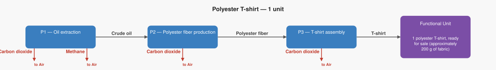

/technosphere-and-ecosphere polyester_tshirt
Skill version: 0.1 Student: elena Model: sonnet-4-6 Date: 2026-06-15
AI: Imagine a busy town that has a wall around it. Inside the wall: houses, factories, shops, roads — everything built and run by people. Outside the wall: fields, rivers, the sky, the forest — nature, exactly as it would be without humans.
Now imagine a factory inside the wall burns coal to run its machines. Two things happen: first, a truck drives through the town and delivers the coal (that coal never leaves the wall — it moves from one part of the human world to another). Second, the chimney sends smoke up into the sky above the wall — and that smoke drifts out beyond the wall into the fields and the river.
Here is the question: which of those two things — the coal truck or the chimney smoke — actually crosses the wall and reaches the natural world outside?
Student: chimeny
AI: Exactly right — the chimney smoke is the one that crosses the wall. The coal truck stayed inside the town the whole time, moving from one human-made place to another without ever touching the natural world. The smoke drifting out over the fields and into the river — that is where environmental harm begins.
In Life Cycle Assessment, researchers use two names for these two worlds. The human-made world — everything inside the wall, like factories, farms, mills, and trucks — is called the technosphere (from “techno”, meaning made by people). The natural world outside the wall — air, water, soil, living ecosystems — is called the ecosphere (from “eco”, meaning the living environment).
The key idea is this: environmental harm only happens when something crosses the boundary between the two. Emissions released into the ecosphere (like CO₂ into the air) are the flows that cause impact. Everything that moves around inside the technosphere stays inside the wall and does not directly harm the natural world.
Now let’s sort a real LCA study into these two worlds. This is the recipe card for Polyester T-shirt — 1 unit.
../../skills_references/polyester_tshirt/product_graph_structure.svg
{kind=link}
Inside the wall — the technosphere: The three boxes in this diagram are the processes — the human activities that make the T-shirt. In this study that means Oil extraction, Polyester fiber production, and T-shirt assembly. Also inside the wall are the intermediate products flowing between those boxes: crude oil moving from the well to the fiber plant, and polyester fiber moving from the fiber plant to the garment factory. Those flows stay entirely inside the human-made world — they never touch nature.
Crossing the wall — into the ecosphere: Two substances are emitted from this supply chain into the natural world: - Carbon dioxide — released to air at all three stages: the oil well, the fiber plant, and the garment factory. - Methane — released to air at the oil well only, as a fugitive leak (meaning it escapes from pipelines and equipment, rather than being burned deliberately).
In LCA, these crossings are called elementary flows — the basic exchanges between the human world and the natural world. They are the only flows that score as environmental impact, because they are the only ones that actually reach the ecosphere.
Carbon dioxide appears at all three stages of this supply chain, but methane only appears at the oil well. Which one do you think causes more total climate harm in this study — carbon dioxide or methane?
Student: carbon dioxide
AI: You are absolutely right this time — and it is worth noticing that this is the opposite of the wool yarn result. In the wool yarn study, methane dominated because sheep produce so much of it during digestion. Here, carbon dioxide is the bigger culprit because it is released at every single stage: the oil well, the fiber plant, and the garment factory. Adding those up gives about 2.16 kg of CO₂ crossing into the ecosphere, compared to only 0.42 kg CO₂ equivalent from the methane leaking at the oil well.
This is an important reminder that the technosphere-ecosphere framework is not a one-size-fits-all answer — you have to look at the specific crossings in each study to know where the real impact is hiding.
Now here is the what-if question for this study. The carbon dioxide in this supply chain comes almost entirely from burning fossil fuels to run machines — at the oil well, at the fiber plant, and at the garment factory. The technosphere flows (the crude oil, the polyester fiber, the T-shirt itself) stay inside the wall.
Imagine the garment factory switched to solar panels instead of coal-fired electricity. Which part of the LCA would change — the technosphere processes, the ecosphere crossings, or both?
Student: the ecosphere crossings
AI: That is exactly right — and it is a really sharp answer. The technosphere processes would stay the same: oil still gets extracted, fiber still gets made, the T-shirt still gets assembled. What would change is the crossing — the CO₂ that currently leaves the factory chimney and enters the ecosphere. Solar panels generate electricity without burning anything, which means nothing crosses the wall from that factory. The garment assembly stage would go from 1.0 kg of CO₂ into the air down to nearly zero.
This is a powerful insight for anyone working in fashion procurement. A brand that moves its garment factories to renewable energy is not changing its technosphere supply chain — the same countries, the same factories, the same materials. But it is reducing its ecosphere crossings, which means it is genuinely reducing environmental impact, not just rearranging steps inside the wall.
Here is the sharper version of that question to keep in your toolkit: when a supplier claims their product is “greener” or “more sustainable”, ask — did they reduce their ecosphere crossings, or did they just change something inside the technosphere? Switching from one oil-based dye to another, repackaging in recycled boxes, moving production to a different country — none of those necessarily reduce what crosses the wall. Only fewer emissions to air, fewer resources drawn from nature, and fewer substances discharged to water represent genuine improvement.
The technosphere-ecosphere boundary is the reason LCA studies track elementary flows — that is the official name for the crossings we have been talking about. The natural next step is understanding how those crossings get converted into impact scores — a process called characterisation, which is where the CO₂ and methane numbers get turned into a single comparable figure. Would you like to explore that, or is there anything about the two worlds you would like to revisit?